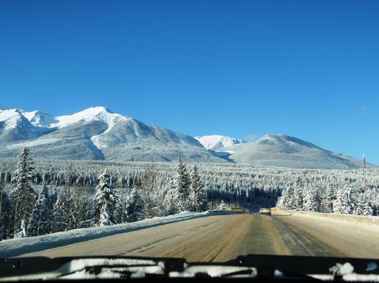
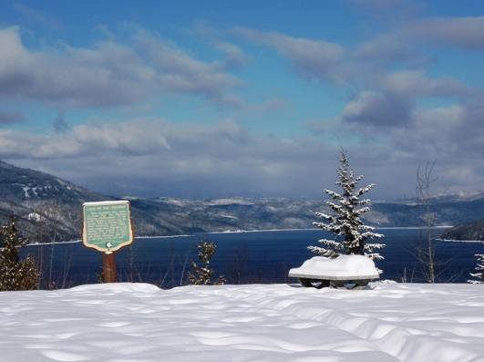
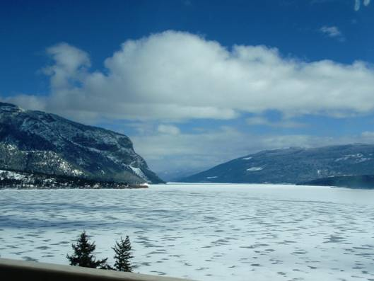
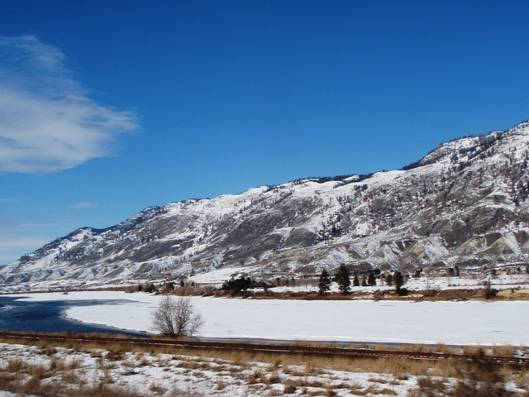
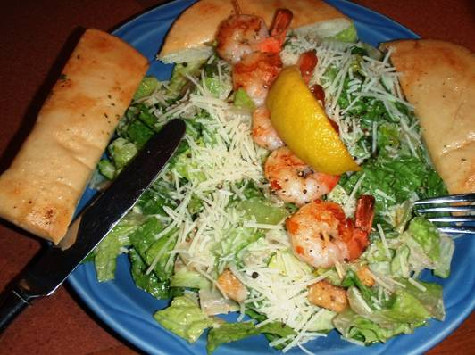
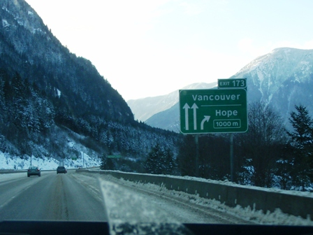
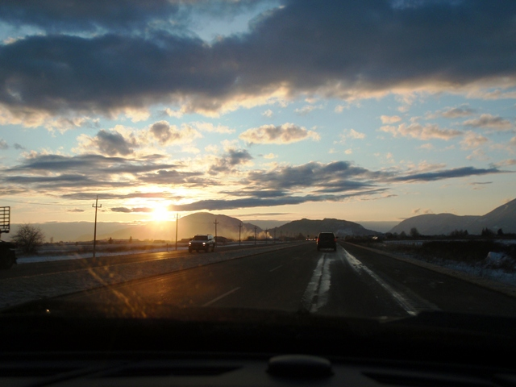
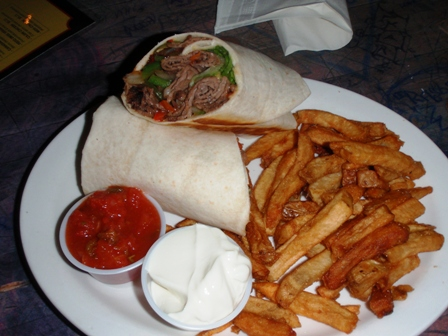

今日はレイディウム・ホットスプリングスから一気に走り、旅の終着地バンクーバー(Vancouver)を目指す。

朝８時、ロッジを出発。

ハイウェイ９５号線を南へ。

クランブルック(Cranbrook)でハイウェイ３号線に入り、西へ。

どこまでも続く山道。

途中の休憩所にて。

中倉。

山部。

昼食。

さらに西へ。次第に雪が少なくなってくる。

ホープ(Hope)の手前でハイウェイ５号線（コカハラ・ハイウェイ）に入る。

夕方、バンクーバーの街が見えてきた。

２週間ぶりに戻ってきた都会の景色。

旅の終着点、バンクーバー国際空港近くのレンタカー営業所に到着。

２週間、6300kmを走り抜いたJeep。本当にお疲れ様。

車を返却し、空港からシャトルバスでホテルへ。

夕食はバンクーバーの街で打ち上げ。

今日の走行距離は約850km。全行程の幕が閉じた。